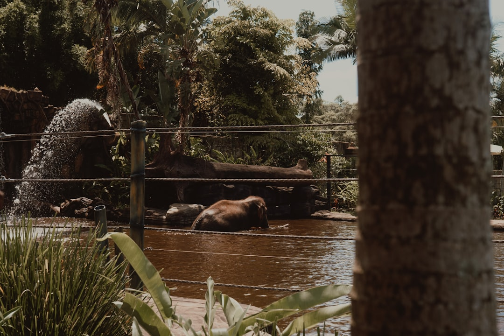

For homeowners comparing pool retaining wall builders brisbane options, the useful starting point is how pool placement, retained levels, drainage, access and approvals interact on one address.
Pool Retaining Wall Builders Brisbane Explained
Pool Retaining Walls Brisbane frames the enquiry as a planning conversation before construction decisions are locked in. For a pool near a change in level, the source page treats pool placement, retained levels, drainage and access as connected project questions, not separate choices to solve in isolation.
A useful brief should describe what is already on site, where the pool may sit, what is known about access and what water movement has been observed. Include nearby structures because the source page asks owners to mention them, and keep photos available for later if a provider asks for them.
- Record the intended pool position and any existing retaining walls.
- Note levels, access constraints, drainage observations and nearby structures.
- Share any reports already available when asking for a project review.
- Ask which approvals, certification and engineering questions apply to the address.
Who This Applies To
This guide applies to Brisbane owners planning a pool where retained ground, a sloping block, an existing wall or a proposed new wall could affect the design conversation. It is also relevant where a concrete pool shell, surrounding levels, safety barriers and retaining details need to be considered together.
The source page refers to Brisbane's inner west, established river suburbs and acreage edge localities as project contexts where access, changing levels and site specific approval questions can matter. Those location notes are useful because they point to different site conversations. A tighter established block may make working room and material handling prominent, while changing ground can bring finished levels and excavation sequence into the early review.
For a narrower companion explanation, the related guide on pool retaining walls in Brisbane sits beside this planning checklist.
Decision Points Before A Quote
Before asking for a fixed scope, separate visible site observations from items that need professional confirmation. Observed items can include access, visible drainage paths, levels, existing walls and nearby structures. Confirmed items include approval requirements, certification and engineering matters that depend on the wall, site and proposed work.
The project conversation should test whether the pool position, excavation sequence and finished levels still make sense after access and water movement are considered. A quote request is more useful when assumptions are visible, especially around machinery movement, material handling, drainage paths and the interface between the wall and pool surrounds.
- Start with the intended pool location and desired finished level.
- Mark where retained ground begins, changes direction or meets existing structures.
- Describe how machinery and materials could reach the work area.
- Ask what information a contractor or certifier needs before approval questions are discussed.
- Keep drainage and waterproofing questions attached to the pool and wall interface.
New Work Versus Renewal
Not every enquiry starts from bare ground. Some projects involve an existing pool and retaining wall arrangement that needs a clearer renewal path. In that case, the source page says the wall's condition, footing, drainage and proximity may affect the project and should be considered for the specific address.
For new work, the named planning paths include integrated pool and retaining planning, sloping site pool excavation planning, structural retaining wall coordination, pool drainage and waterproofing coordination, and concrete pool shell and surround planning. Use those as prompts for one conversation, because pool placement, water management, excavation and finished surrounds can affect the same site.
Where the job involves renewal, ask what can be reviewed before the renewal path is chosen. Where the job involves new construction, ask which decisions must stay open until levels, access, drainage and project specific requirements are checked.
Questions To Put To Contractors And Certifiers
The practical aim is a better first conversation, not a substitute for professional advice. The source page states that approval, certification and engineering requirements remain project specific, so owners should ask questions that show what must be verified for the address.
- Does the proposed wall, pool position or nearby structure raise an engineering question?
- What details are needed before approval requirements can be discussed for this address?
- How will excavation, machinery movement and material handling affect the sequence?
- Where should drainage paths be observed before excavation or new hardscape hides them?
- What information should be included in a quote request so assumptions are clear?
ASIC Moneysmart gives renovation guidance that supports planning spending carefully. For pool and retaining work, that budgeting discipline fits the source page's emphasis on defining site context, assumptions and professional advice before treating an estimate as settled.
- Map the site. Record the intended pool location, existing walls, levels, access limits, nearby structures and visible drainage paths.
- Separate observation from confirmation. Keep visible site notes separate from approval, certification and engineering questions that need project specific advice.
- Brief before quoting. Share photos if requested, reports already available and access notes so a provider can review the project context.
- Confirm the interface. Ask how the pool shell, retaining details, drainage, waterproofing and finished surrounds will be coordinated.
| Scenario | Early focus | Question to ask |
|---|---|---|
| Pool near a change in level | Pool placement, retained levels, drainage and access | Do the finished pool, wall and ground levels make sense together? |
| Sloping site excavation | Access, excavation sequence and finished levels | Can machinery movement and material handling work with the proposed layout? |
| Existing pool wall renewal | Condition, footing, drainage and proximity | What needs review before the renewal path is chosen? |
This guide covers pool and retaining planning questions for Brisbane sites where levels, drainage, access and approvals need to be considered together.